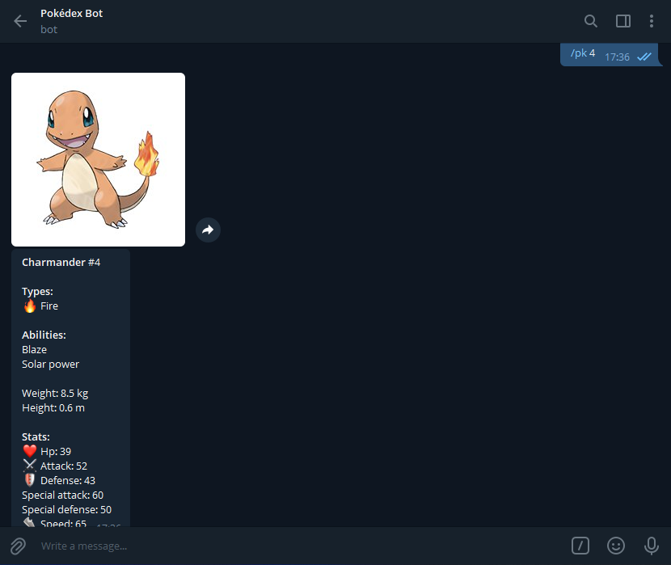
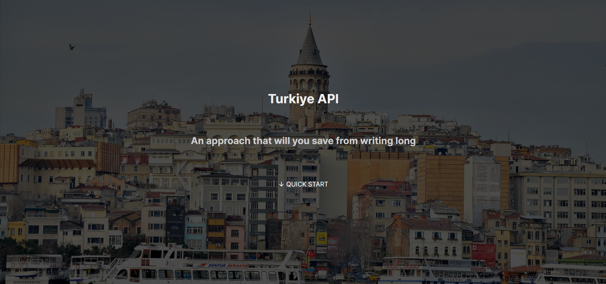
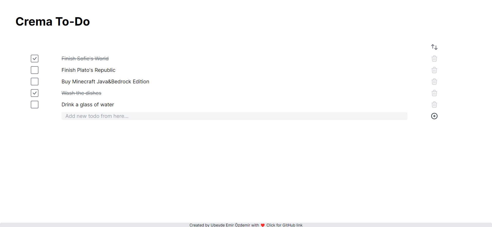
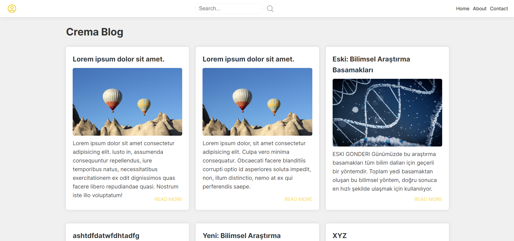

Featured Projects
In particular, I would like to introduce these two projects
JavaScript
PokédexBot

Pokédex Bot for Telegram can show you the list of all
pokémon and give you the picture and description of that pokémon in
return for you to enter the ID or name of the pokémon you requested.
View source code
Try to use
JavaScript
HTML
SCSS
CSS
Countrypedia
An application where you can see all countries. This
web application shows you the list of many countries, also you can
search for countries, get information such as the flag, coat of
arms, population, region of the country you selected.
View source code
Try to use
Pug
JavaScript
Turkiye API

This API allows you to get data about
provinces/districts in Turkey/Turkiye. 🇹🇷
View source code
Try to use
Vue
HTML
JavaScript
CSS
Vue Simple To-Do App

A simple to-do app built using Vue.js and tailwindcss.
View source code
Try to use
C#
MovableArrow
An application that has an arrow in the middle of the
screen and you can move it using the arrow keys. Built with C#
View source code
Try to use
HTML
CSS
Pug
JavaScript
CremaBlog

A blog app created with Node.js, Express, MongoDB,
Mongoose etc. (Under development)
View source code
Try to use
 ↓ Learn More
↓ Learn More